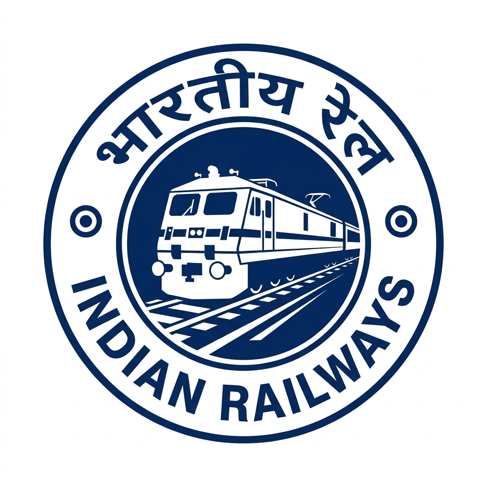

Integrated Management System
Choose your designation to continue to the secure login portal
Railway Station Operations & Management
Track, Signal & Infrastructure Maintenance
Locomotive Operations & Route Navigation
Enter your credentials to access the portal
Automatic Block Scheduling · Engineering · TRD · S&T
| Block Window | Section | Departments | Tasks | Impact | Status |
|---|
Submit a repair request for a blocked track section
Mark exact repair chainage (KM) along large track corridors
Calculate & broadcast alternative route for affected train